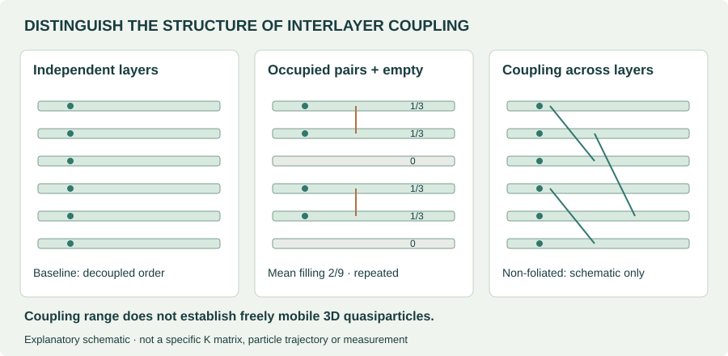
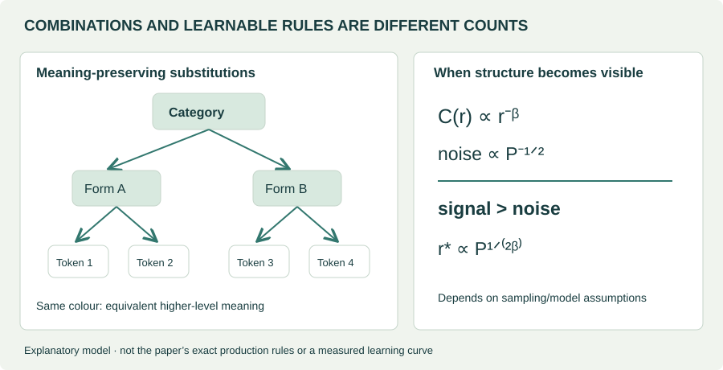
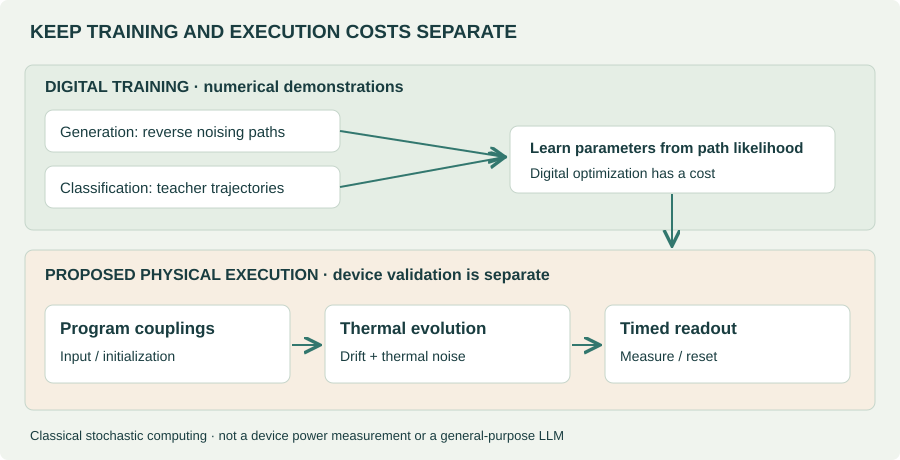

EDITORIAL OVERVIEW
Three topics read through structure and fluctuation
The September 2026 selection from the Journal Club for Condensed Matter Physics (JCCM) puts three questions alongside one another. Can interactions create new topological order when electrons barely move between layers? What statistical structure can a neural network learn when the number of possible inputs is enormous? Can thermal noise become a computational resource rather than an error? These questions share a physical approach to complex state spaces. They do not establish one common algorithm or device.
This review examines the six papers linked by the three September selections. A recent recommendation is not necessarily a recent paper: the layered-order studies are 2026 preprints, while the hierarchy studies date to 2024. The thermodynamic-computing papers appeared in journals in 2026; their public preprints provide the technical texts reviewed here.
| Commentary selection | Selected papers | Evidence available now |
|---|---|---|
| Sidhartha Parameswaran · Yves H. Kwan Stacked fractional quantum Hall states | Das et al.: foliated FQH Jin et al.: non-foliated FQH June–July 2026 preprints | Finite-system calculations, variational states and effective theory—not observation in a material. |
| Anirvan Sengupta Learning hierarchical structure | Cagnetta et al.: Random Hierarchy Model Cagnetta & Wyart: language structure PRX · NeurIPS, 2024 | Synthetic models and corpus comparisons—not a general polynomial-time learning proof. |
| Alexei V. Tkachenko Computing with thermal noise | Whitelam: generative computing Whitelam: gradient-descent training PRL · PNAS, 2026 | Classical stochastic simulations and energy estimates—not device power measurements. |
Editorial assessment. The first group engineers interactions to change possible topological orders. The second identifies when structure becomes statistically visible in data. The third seeks to implement learned computation through physical stochastic dynamics. Their relevant tests are, respectively, phase stability, sample complexity and whole-device cost.
01 / LAYERED TOPOLOGICAL ORDER
A stack need not be a collection of independent two-dimensional states
Interlayer motion and interlayer interaction are separate controls
Tunnelling moves an electron between layers. Coulomb interactions act even without that transfer. A stack can therefore combine weak motion with strong interaction. This differs both from assembling independent layers and from strongly hybridizing them into an ordinary three-dimensional electronic band. Momentum mismatch in rotated layers and the separation between layers are distinct physical controls.
In foliated topological order, adding or removing particular two-dimensional layers is important to the classification. Non-foliated order cannot be reduced in that way to an independent-layer sum. Neither the word “three-dimensional” nor interlayer topological correlations establish freely mobile quasiparticles in all three directions. The range of topological coupling and the permitted motion of excitations must be checked separately.
Das et al. use finite-stack exact diagonalization and model states. Their nine-layer trimerized Fibonacci example repeats the occupancy pattern [1/3, 1/3, 0]: an occupied pair with non-Abelian order followed by an empty layer. Its mean filling per layer is 2/9, not uniform 1/3. This is finite-system theoretical evidence, not demonstration in a macroscopic material.

Fibonacci anyons are not the same as irrational exchange angles
Fibonacci fusion allows more than one outcome when two nontrivial excitations combine: conventionally, τ × τ = 1 + τ. The quantum dimension φ = (1 + √5)/2 is irrational. That is a different property from an exchange angle whose ratio to π is irrational. Sharing the word “irrational” does not make the orders equivalent.
Jin et al. compare candidate states in twisted van der Waals multilayers and study irrational statistics in an infinite-stack effective theory. One example, (3100), has self-exchange angle θ = π/√5. Reading the integer-K-matrix construction identifies this as an extension of Abelian statistics, distinct from Fibonacci non-Abelian fusion; this distinction is the review’s theoretical interpretation.
This elementary identity explains why the infinite-layer limit matters. A finite inverse gives ratios of integers, while an infinite limit permits a different structure. Every experimental sample is finite. Measuring a nearby value cannot by itself prove mathematical irrationality. Charge, transport and correlation measurements would need to constrain competing explanations together.
02 / HIERARCHY AND SAMPLE COMPLEXITY
The visibility of correlations limits learning
An enormous number of possible sentences does not imply that training must enumerate them. If observations share generative rules, the object to be learned can be much smaller than the list of combinations. Conversely, an existing rule may be indistinguishable from accidental correlation when too few samples reveal it. Keeping these ideas separate clarifies the hierarchy papers’ question.
“Polynomial” requires a specified variable
The Random Hierarchy Model (RHM) studies synthetic classification data with equivalent production rules. With depth L, branching s, rule count m and class count nc, input dimension is d = sL. The reported sample-threshold scaling can be written as:
This is exponential in depth but polynomial in input dimension. There is no contradiction: the variable and the fixed parameters belong to the claim. Needing relatively few examples also differs from efficiently computing an answer from those examples. Optimization steps, network width, memory and inference cost require separate complexity analyses.
A useful intuition is meaning-preserving substitution. A high-level category admits several lower-level expressions, each of which admits several token combinations. Instead of memorizing surface tokens, a learner should become insensitive to substitutions that preserve the category. This is an explanatory analogy, not a claim that real language or molecular data follows the random production rules exactly.

Accepting long context differs from learning useful long-range signals
The language-structure study by Cagnetta and Wyart connects hierarchical correlations with finite-sample noise. If signal decays as C(r) ∝ r−β while independent-sample noise scales as P−1/2, detectable range grows as r* ∝ P1/(2β). Synthetic-model analysis and natural-corpus comparisons do not have the same force as a universal theorem.
The editorial lesson is to distinguish a system’s context capacity from statistically useful context. Accepting many tokens does not guarantee that the model has learned relevant distant information. Duplication, dependence between documents and tokenization can undermine a simple independent-sample approximation. Insufficient model capacity and insufficient data signal can also produce superficially similar learning curves.
03 / THERMAL-NOISE COMPUTING
What it means to encode learned computation in thermal dynamics
Thermal noise is unavoidable in small physical systems. When the goal is sampling a distribution rather than returning one deterministic value, fluctuation can be useful. Noise alone does not create a generative model: forces, coupling, temperature, initialization and observation time must together produce the desired distribution.
The first term is drift down the learned energy landscape; the second represents thermal fluctuations. A long-time equilibrium distribution need not equal the state distribution at a specified finite time. If generation or classification uses a timed readout, that timing belongs to the model. Saying that a device evolves “naturally” cannot replace an observation protocol.
Generation: learning the reverse of a noising path
Generative Thermodynamic Computing trains classical stochastic dynamics to make reverse noising paths more likely, demonstrating generation on a small digit-image example. The proposal encodes learned forces in physical couplings instead of calculating a neural denoising force externally at every step. The evidence is a numerical proof of concept, not broad generative-quality validation.
This differs from simply assigning good images low equilibrium energy. Such an intuition does not determine the output distribution at a particular readout time. Learning reverse trajectories and waiting for equilibrium samples are different objectives. Comparisons of generation quality should therefore report sampling time and initialization, not just a final image.

Classification: teaching dynamics, not just the teacher’s answer
Training thermodynamic computers by gradient descent uses teacher-network trajectories to train stochastic dynamics. Reported MNIST top-1 accuracy is 97.3% for the teacher, 91.7% for a single student trajectory and 92.0% when averaging ten. The estimated energy advantage exceeding 107 rests on computational and device assumptions—not a measured wall-plug comparison at matched accuracy.
| Condition | Question to answer |
|---|---|
| Quality and repetitions | Is accuracy matched? Are the time and energy of multiple trajectories included? |
| Complete execution cycle | Where are input setting, coupling programming, readout, reset, cooling and calibration counted? |
| Training and lifetime | Over how many inferences is digital training amortized? How often does drift require retraining? |
| Physical reproducibility | Does performance survive device variation, temperature changes and time-correlated noise? |
Thermodynamic computing here is not quantum computing: these models evolve classical stochastic variables. Exploiting thermal fluctuations also differs from computing without energy expenditure. Costs displaced outside the accounting boundary must be checked. For a device demonstration, that question matters as much as the algorithm’s appeal.
REVIEWER PROPOSALS
Minimum tests before turning the three topics into research workflows
The following are proposed follow-ups, not paper results. Rather than combining the topics prematurely into one platform, test the conditions under which each claim could fail.
- Layered phases: vary layer count, layer inhomogeneity and residual tunnelling separately, comparing competing states. Connect order diagnostics to accessible transport and spectroscopic signals without assigning a phase from one signal alone. Finite-stack convergence of an irrational angle and verification of non-Abelian fusion remain different tasks.
- Hierarchical learning: first reproduce the sample threshold with known hierarchy rules and substitution counts. Then control document length, duplication and information placement in language or research corpora. Record sample scaling with input dimension separately from training runtime.
- Thermal computing: match accuracy to a digital baseline before comparing latency and energy for single and multiple trajectories. Without a device, report simulations separately from hardware-cost assumptions. With a device, measure the complete input-to-output-and-reset cycle.
For materials and molecular AI, the immediate transfer is the validation discipline. Hierarchical representations might improve data efficiency, but chemical invariances and data splits need testing. A thermal sampler could generate candidates without automatically guaranteeing molecular validity, synthesizability or property prediction. None of these six papers validates OLED or TADF device performance.
BOTTOM LINE
Physics offers testable conditions, not just analogies for AI
The stacking studies explore how separately adjustable freedoms permit new phases. Hierarchical learning asks when data signals become visible. Thermal computing asks what physical cost accompanies learned dynamics. Claims about structure—and the conditions for testing those claims—connect the three topics.
Three distinctions should survive the reading: Fibonacci non-Abelian order is not irrational exchange statistics; polynomial sample complexity is not general polynomial-time learning; and a simulation-based energy estimate is not a demonstrated whole-device advantage. Keeping these boundaries preserves the novelty while identifying the next meaningful test.
SOURCES / VERSION BOUNDARIES
References and reviewed versions
- Journal Club for Condensed Matter Physics, September 2026 selections. Public selection pages: Parameswaran & Kwan, Sengupta, Tkachenko. Commentary DOIs: 10.36471/JCCM_September_2026_01, _02 and _03. Selection pages checked; commentary PDFs not read.
- Das et al., Three-dimensional Foliated Fractional Quantum Hall Phases. arXiv:2606.19426, v1 full text, 2026-06-17. Preprint.
- Jin, Lim, Kim & Cho, Three-Dimensional Non-Foliated Fractional Quantum Hall Phases with Irrational Anyons in Twisted van der Waals Multilayers. arXiv:2607.13127, v1 full text, 2026-07-14. Preprint.
- Cagnetta, Petrini, Tomasini, Favero & Wyart, How Deep Neural Networks Learn Compositional Data: The Random Hierarchy Model. Physical Review X 14, 031001 (2024). Reviewed text: arXiv:2307.02129v5, 2024-07-03.
- Cagnetta & Wyart, Towards a theory of how the structure of language is acquired by deep neural networks. NeurIPS 2024. Reviewed text: arXiv:2406.00048v3, 2024-10-29.
- Whitelam, Generative Thermodynamic Computing. Physical Review Letters 136, 037101 (2026). Reviewed text: arXiv:2506.15121v3, 2025-10-30; not a line-by-line check against the final journal text.
- Whitelam, Training thermodynamic computers by gradient descent. PNAS 123, e2528413123 (2026). Reviewed text: arXiv:2509.15324v1, 2025-09-18. Final publisher full text inaccessible.
Evidence cutoff: 2026-10-01. Formula notation is harmonized for this explanation. Editorial assessments and research proposals are distinguished from paper claims. The cover is AI-generated conceptual art; the other figures are code-built explanatory schematics.